Render Layers
Configuração básica
As Render Layers permitem organizar a renderização por "camadas", facilitando o isolamento de elementos. As camadas são depois combinadas no editor de nós para criar a imagem final.
1- Para a demonstração que se segue, foi criada a cena abaixo. A cena é composta por um fundo (layer 1), um dado (layer 2), um objeto estranho (layer 3), a Suzanne (layer 4) e uma luz Sun (está simultaneamente nas layers 1, 2, 3, 4 e 0).
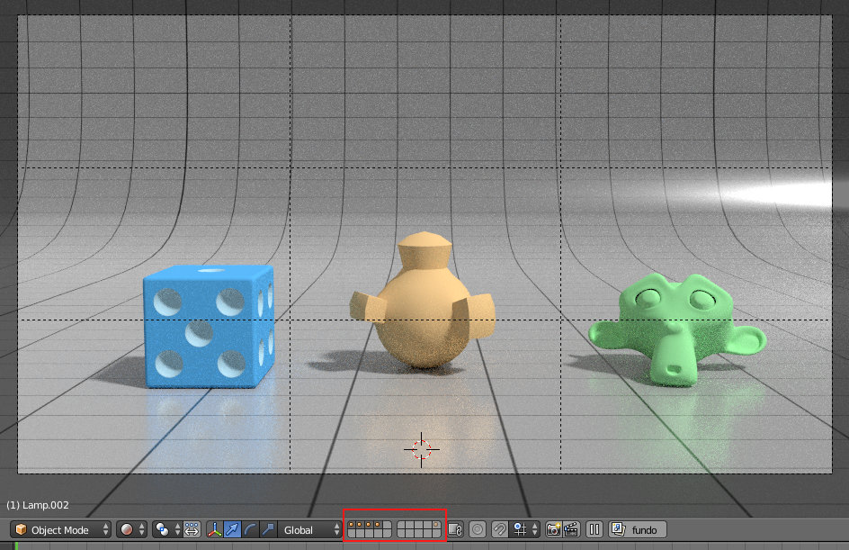2- No painel Render Layers foram criadas mais 3 Render Layers e renomeadas todas as 4. A imagem abaixo mostra a configuração da Render Layer suzanne.
O primeiro conjunto de 20 caixas (lado esquerdo, topo) identifica as layers que fazem parte da cena. No nosso caso, a cena tem objetos espalhados pelas 4 primeiras layers. Ou seja, todas as nossas Render Layers têm as 4 primeiras layers da Scene ativadas.
O segundo conjunto de 20 caixas (lado direito, topo) identifica as layers que vão ser ser incluídas na imagem renderizada desta Render Layer. Ou seja, no nosso caso, como pretendemos isolar os 4 elementos (fundo, dado, objeto estranho e Suzanne), cada Render Layer só tem uma Layer ativada. A Render Layer suzanne só tem ativada a Layer onde está a Suzanne, a Render layer fundo só tem ativada a Layer onde está o fundo, etc.
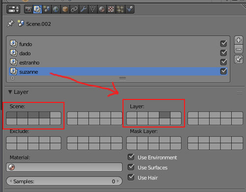3 - No painel Render, ative Transparent para que cada Render Layer seja renderizada com fundo transparente.
4- Clique em Render para renderizar as várias Render Layers.
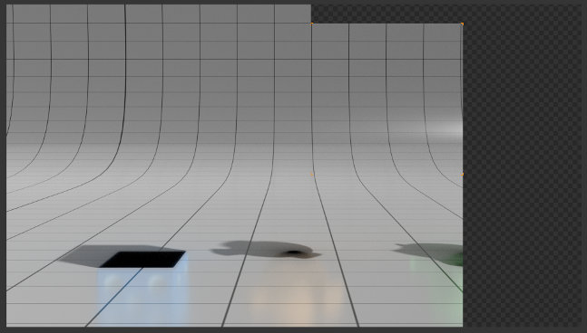 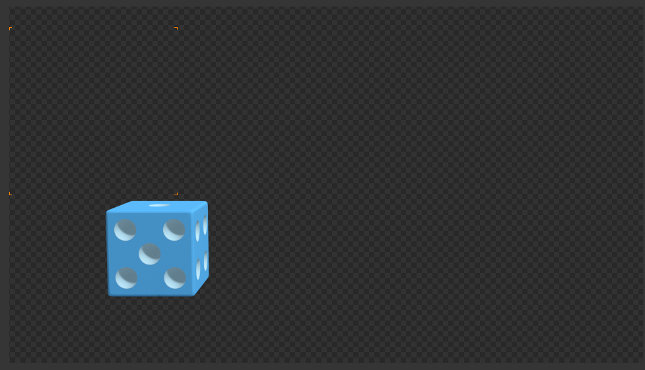 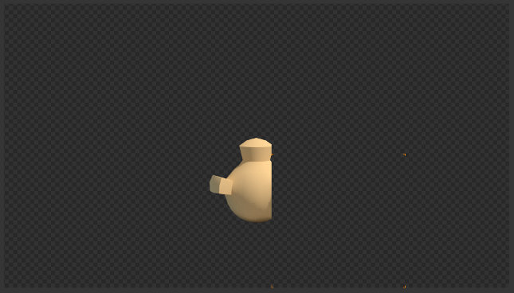 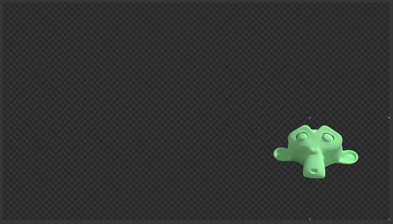5- Escolha a janela do Node Editor. Clique para ativar Compositing Nodes, Use Nodes e Backdrop. Vamos utilizar 4 nós de Render Layers (Input) e 3 Alpha Over (Color) para combinar as Render Layers.
Primeiro vamos combinar a Render Layer fundo com a Render Layer dado utilizando um nó Alpha Over.
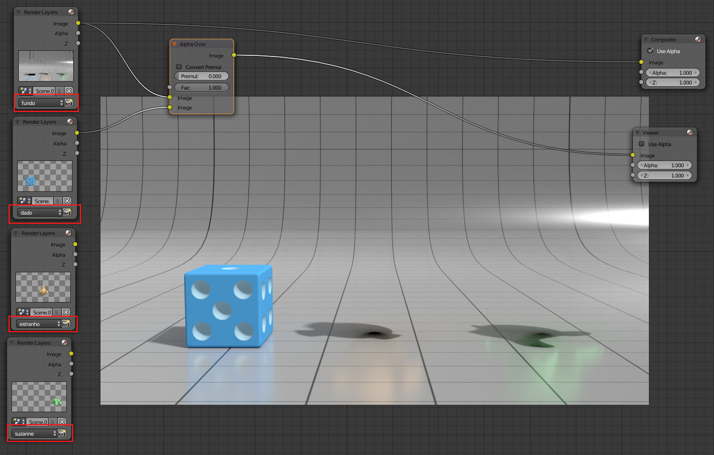Depois combinamos as restantes Render Layers seguindo a mesma lógica.
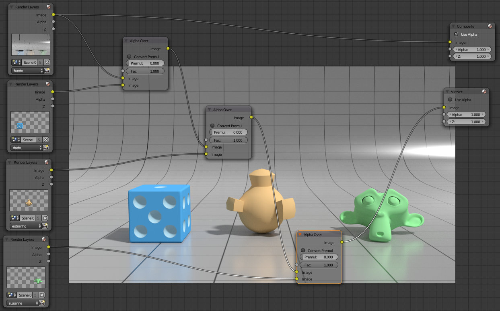6- Agora é possível manipular cada Render Layer isoladamente. Por exemplo, na imagem abaixo utilizámos um nó Hue Saturation Value (Color) para modificar a matiz (Hue) na Render Layer suzanne. Repare que o reflexo da Suzanne no fundo continua verde :) porque a manipulação da matiz só se aplica ao conteúdo da Render Layer suzanne e o fundo está noutra Render Layer.
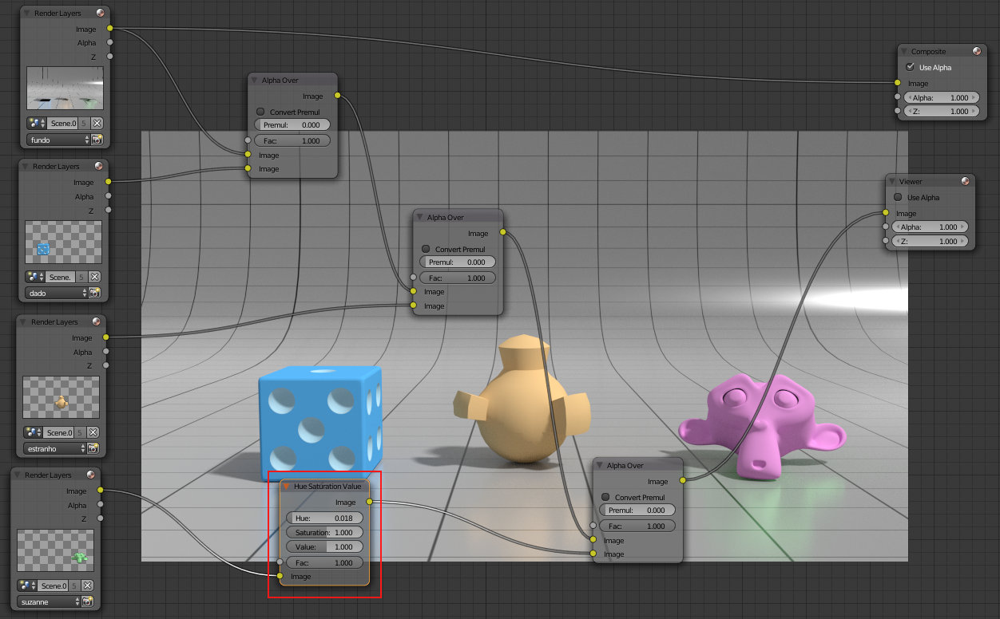Outras opções
- Exclude
- Permite excluir Layers da Render Layer (exemplo abaixo)
- Mask Layer
- Permite utilizar Layers como máscaras (exemplo abaixo)
- Material
- Permite definir um material que sobrepõe aos existentes na Render Layer. Veja um exemplo no texto sobre Clay render.
- Samples
- Permite definir um número de Samples para a Render Layer diferente do definido no painel Render. Deste modo, por exemplo, pode definir 200 Samples para a renderização global e 500 para a renderização de uma Render Layer.
- Use Environment
- Permite (des)ativar utilização de Environment na Render Layer (exemplo abaixo)
- Use Hair
- Permite (des)ativar utilização de Hair
Exclude
Render resultante da combinação apresentada anteriormente.
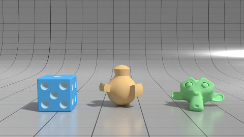Novo render mas depois de utilizarmos o Exclude para excluir da Render Layer fundo o conteúdo da Scene Layer onde está o dado. Ou seja, os reflexos e sombras do dado, que eram visíveis na Render Layer fundo, deixam de ser visíveis porque a sua razão de existência foi excluída. Os reflexos e as sombras eram visíveis porque a Layer do dado existia para a Render Layer fundo.
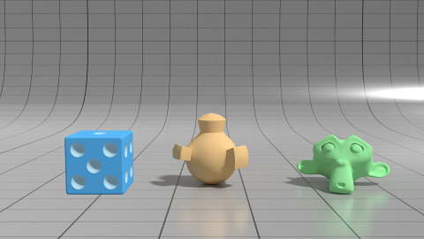 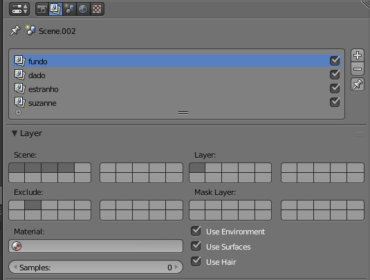Mask Layer
Para demonstrar a utilidade da Mask Layer, inserimos um novo objeto à frente do dado. Este novo objeto está na Scene Layer 5. Na Render Layer dado foi também ativada a Layer 5.
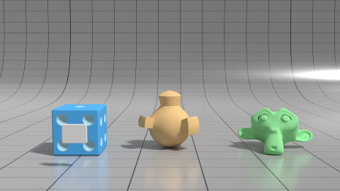 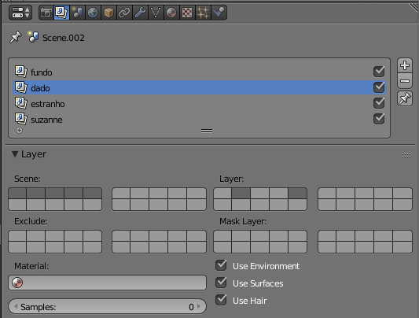Se a Layer 5 não for ativada numa Render Layer, o objeto não será visível. No entanto, como faz parte da Scene (está ativa nas Scene Layers) ela está presente. Repare que a sombra do objeto surge no chão.
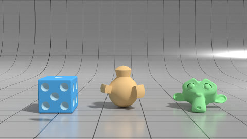 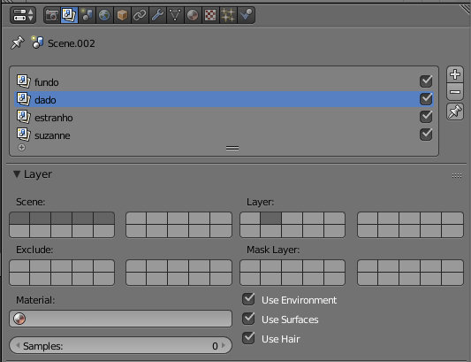Finalmente, na Render Layer dado, utilizamos a Scene Layer 5 como Mask Layer. O resultado é o "recortar", na Render Layer dado, do conteúdo (os objetos) presente na Scene Layer 5.
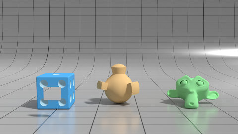 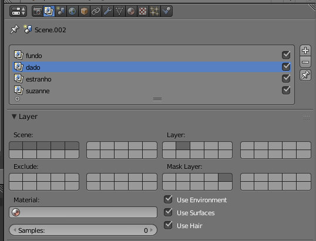Use Environment
Render resultante da combinação apresentada anteriormente.
Novo render mas depois de alterarmos a cor do Background no painel World.

Novo render (também com a nova cor do Background) mas depois de desativado o Use Enviroment para a Render Layer estranho..
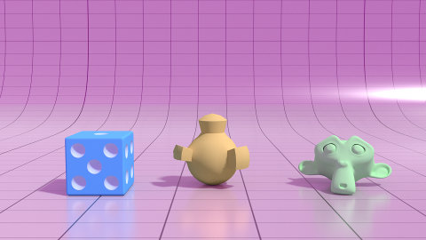 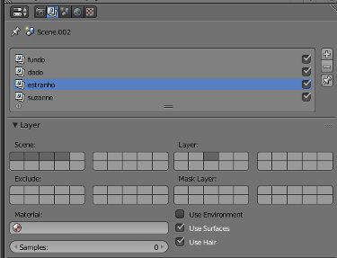